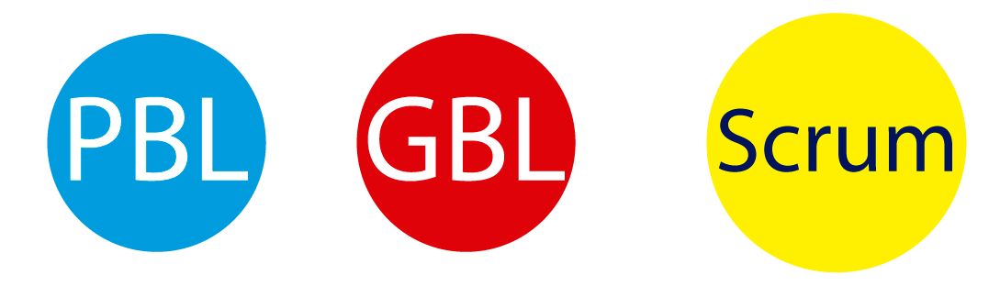

“De lo que ves créete la mitad de lo que no ves no te creas nada” ― Kase-O
"Tu quieres llegar donde estoy yo, ¿En dos días? Ayer eras mi fan, hoy eres dios, ¡tonterías!" ― Kase-O
El portafolio es la forma de mostrar su experiencia, aunque no halla trabajado por medio de un contrato legal, recuerde que hay muchas opciones:
El portafolio se vuelve su mensajero, que habla por usted y permite que usted sea omnipresente.
Se recomienda además que tenga identidad, que sea: fácil de acceder, fácil de enviar, fácil de recordar, y debe estar actualizado.
Roles complementarios (Abstract:netflix)
Creación de juegos de video, desde el Game Design Document, hasta la implementación y comercialización del mismo.
Animación 2D y 3D, teatro, captura de movimiento, video mapping, Artistas técnicos, Concept art...
Diseño de interacción con el usuario, se apoya en microcontroladores, actuadores y sensores.
El estudiante no debe realizar tareas, hace proyectos para crear su portafolio, el docente sigue métodologías de enseñanzas, que pueden apoyarse en Scrum
Project-based learning, Se aprende mientras se realiza un proyecto.
Game-based learning, Se aprende programación mientras se realiza un juego de video
Un curso tiene un contacto a la semana de 4 horas presenciales, en las cuales se debe enseñar conceptos básicos de programación, aprender a usar una herramienta para realizar un juego, aprender sobre herramientas profesionales como el uso de un repositorio, realizar evaluaciones y adicionalmente contarles que es Scrum.
Para tener éxito en esta labor, se recomienda adaptar scrum a las necesidades
Scrum cada vez se hace más popular, dejo de ser un framework usado en desarrollo de software para ser el salvador y creador de proyectos exitosos. Muchas empresas Colombianas como bancos, empresas de seguridad, empresas públicas, etc usan scrum.
Sin embargo los estudiantes no tienen clara la importancia de usar scrum y de conocer lo básico para participar en proyecto, por tal motivo es necesario realizar una introducción a la metodología, se recomienda esta presentación.
Los estudiantes crean sus propios equipos y deciden todas las actividades que van a realizar durante el semestre, según sus habilidades y capacidades, la carga académica y la pasión. Se registra la evidencia con fecha y solo se puede modificar si hay una justificación en el cambio del alcance.
Los sprints tienen libertad de planeación, la única restricción es que debe durar máximo 15 días y debe tener un entregable funcional.
Las evidencias deben mostrar los avances tangibles alcanzados, en este caso nos apoyamos de un foro www.holamundo.co y de herramientas como youtube, imgur, giphy, bitbucket, slideshare y otras.
Las reuniones son mínimo dos por semana, por esta razón las rebautizamos como weekly meetings.
Para realizar seguimiento al avance, cada equipo debe responder tres preguntas en el foro: ¿Qué han hecho?, ¿Qué van a hacer?, ¿Qué dificultades hay?.
Si el equipo no avanza, se asigna un strike, el cual no significa una calificación a menos que se acumulen tres lo cual indica que el proyecto es cancelado y por tanto se asigna inmediatamente la nota final.
El porcentaje de calificación de esta nota es de 40% del curso, este valor es un ajuste de ejercicios previos.
A mitad de semestre se realiza una preentrega de seguimiento del proyecto, la cual tiene un valor de 20%, se realiza una exposición y se continua vendiendo la idea del juego a los compañeros y al profesor.
Algunos juegos destacados, con su debido proceso desde cero.
Algunos juegos destacados, con su debido proceso desde cero.
El estudiante usa este tiempo para experimentar y realizar lo que el quiera, dependiendo de su ocupación, lo importante es que los momentos fuera de clase deben dejar evidencias comprobables.
Adicionalmente todas las herramientas usadas, cuentan con metadatos, que permiten saber la actividad, momento de uso, lugar de uso, etc.
Este modelo se ha implementado adicionalmente con otros estudiantes de ingeniería de sistemas en el curso Gestión de la Calidad del Software.
El estudiante llega con saberes previos avanzados en programación y metodologías de desarrollo.
Se aprende haciendo, sobre:
Proyecto opensource, se encuentra en :
https://github.com/xaca/holamundo.coSi utiliza el folleto por favor cuéntenos, por medio de un comentario, compartiendo una foto y dando retroalimentación. Si hay algún ajuste que hacer, por favor hágalo. También se reciben traducciones.
Instrucciones necesarias para realizar la impresión física y ensamble de un folleto de bolsillo.
La inspiración es para aficionados los profesionales trabajamos por la mañana - Chuck Close